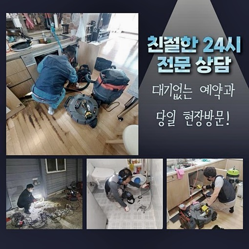
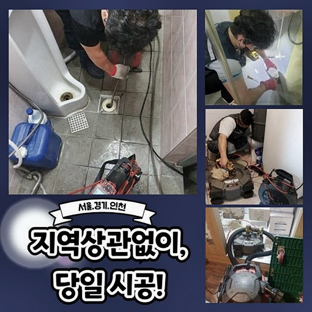
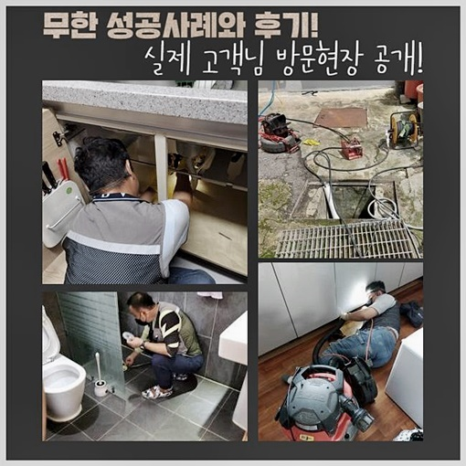
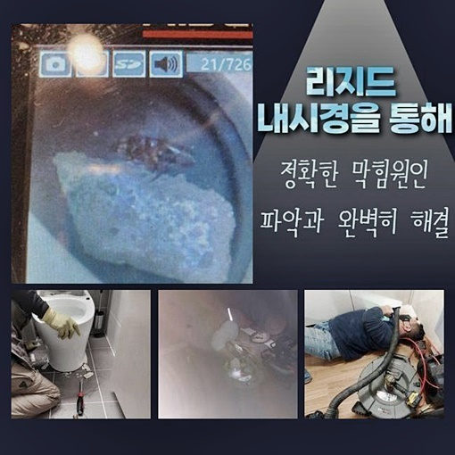
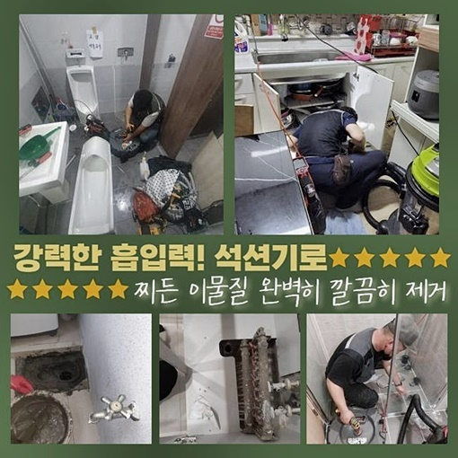
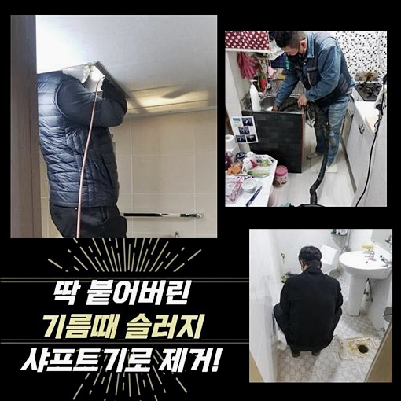

🏠 강남 신사동씽크대막힘 세곡동 하수구뚫는곳 배관막힘뚫는업체
용인 싱크대막힘 전문 시공 후기

📋 작업 개요
- 위치: 용인
- 서비스 유형: 싱크대막힘, 하수구막힘, 배관막힘, 누수수리, 역류해결, 뚫는업체, 배관청소, 고압세척
- 작업 일시: 2024. 9. 7. 21:32
- 업체명: 하수구수사대 (010-5615-2118)
🔍 문제 상황
강남 신사동씽크대막힘 세곡동 하수구뚫는곳 배관막힘뚫는업체
하수도가 막혀버리면 일상을영위할때 불편하게될텐데요
하수구를 뚫어보려고 다양한시도로 처리하고자 하신답니다
하지만 완벽한해결로는 연결되지않고 오히려 잘못건드리다가 심각하게 만드실수도있어요
평소생활시 배관막힘이 일어나지않도록 간헐적으로 관리해주시는게 중요해요
작업내용을 토대로 설명해볼테니 잘살펴보시면 도움되실거에요
의뢰자께서는 처음에 큰문제라고 생각하지못하고 내버려두셨으며 결국엔 하수관이 막힌것인데요
이번장소는 오랫동안 지어져있는 빌라였고 생각과는달리 깨끗히 관리된상태였어요
그치만 하수구내부는 관리가잘되었는지 알수없었기에 최악을 산정하고 하수구구조를 파악하고있었어요
저흰 고객님언급을 바탕으로 오염물질을 흡입해주는 석션장비를챙겼고 내시경장비와 샤프트장비까지 구비했답니다
연식자체가 오래안된 상가의경우 샤프트기를 쓰지않고 석션장비만으로 이물질들을 제거해볼수있는 상태를 볼수있습니다

🔎 원인 분석
💡 전문가 진단: 정밀 진단 장비를 사용하여 슬러지의 고착 여부를 판명하고 타격/세척 작업을 실시했습니다.
이번장소와같이 노후화된 아파트에서 막힘현상이 발현됐다면 분쇄기기를 활용해야해요
샤프트작업을 진행한다면 시간도걸리고 여러장비를 활용하다보니 수리비에있어 예상보다더 나올수가있는데요
저희들은 비용에대하여 작업전에 고지드리고 동의를하셔야만 진행해드리고있어요
무리해서 하수구를 건든다면 되려배관이 역류하거나 손상으로인해 누수현상까지 연결되기도해요
두눈으로봐도 막힌게보였고 역류로인하여 하수구입구가 지저분해진걸 확인할수있었는데요
하수에서역류된 오물들로인해 악취증세가 보였기에 신속대처가 필요한것으로 보였답니다
문의주신분께선 처음에 꽉 막힌 것은 아니었기 때문에 내버려두셨으며 상황이 점점 악화되어 싱크대가 막히게 되었습니다
배수관에 물을부어보니 물이흐르지 못하였고 싱크대아래 배관을 연결해주는 부분쪽에서 오물이 역류하고있는것을 살펴볼수가있었네요
석션기를사용해 오물과찌꺼기를 흡입하고자 노력하였지만 잔해물로인해 흡입이 불가했어요
오랫동안 쌓여있던 이물질들이 배관내부쪽에 붙어있었기에 미동조차없는 상황이었죠
조금이라도 빨아들이기위해 석션기기로 휘저어봤지만 일부정도만 살짝흡입해 올릴수있었어요

🔧 작업 과정
답답한마음에 긴막대기를 배관에투입시켜 해결하려고 시도해보시는 경우도 있을거라 생각해요
한번더 일러드리는것으로 오랜기간 사용된 하수도에 충격을가한다면 크랙이 생길수있어 전문업체의 도움을통해 처리하는것이 가장알맞은 해결법이죠
일단은 하수구세척을 진행하기위하여 막힌원인을 파악하는게 필요합니다
하수구촬영기를 배관속에 투입시켜 어떤모습인지 체크해봤죠
오물들이 차버린 상태인것이 확인되었고 찌꺼기들과 슬러지들이 차있다는걸 배관cctv로 의뢰인과같이 확인하였어요
이물질들때문에 조금의 물만부어도 역류된것이죠
내시경 카메라로 이미 노후화가 진행된 배관의 상태를 확인할 수 있었으며 중앙에서 수직배관이 시작되기 전까지 관 자체가 내려앉은 것도 볼 수 있었습니다
양념과기름이 상당한 한국음식의 특성상 기름기가있는 이물질이 자주 보이는것이죠
오염물질들이 쌓여지는걸 예방하고자한다면 오일이묻어있는 음식물들은 키친타올을 이용하여 제거해준뒤 설거지를해주고 온수로 배수구쪽에 붓는것도 괜찮습니다!
단단하게굳은 오염물들이 붙은상태이므로 이럴때 샤프트작업이 진행되면 손상문제로 연결될수있다보니 악품을이용한뒤 샤프트과정을 거치기로 계획을 수립했어요
이물질을 연하게해주는 하수구약품을 하수관에 붓고나서 일정시간이 지나면 배관카메라로 내부쪽을 다시확인한후 샤프트를 사용했죠
분쇄장비끝에 달려있는 회수형오거가 고착물을 분해시키고 걸어빼는과정을 착수하는 장비랍니다
속해서 내시경카메라로 배관안쪽을 확인했으며 샤프트기로 고착물을 잘게만들어 막히게된곳을 뚫어나갔는데요
남겨진 잔여이물질을 석션으로 뽑아올렸고 중간중간마다 고압청소기로 확실히 청소해주는일도 함께 진행해주었죠
고압세척기로 한쪽만 연속해서 분사한다면 배관에 균열이 갈수있어 한쪽에서만 분사되지않도록 신경써서 진행해주었어요
조금이나마 잔여이물이 남겨져있다면 재차막힐수가 있기때문에 깔끔히 마무리하려고 노력했는데요
하수구파이프가 노후상태가 진행중이다보니 뚫는기계들을 조심스레 활용하는게 해소하는데 도움이되었죠
오염물의 형태를 살펴봤더니 접착성이 강한 기름기로 이루어져있는 상황이었고 많은종류의 오염물질들이 뭉쳐져있었어요


✅ 작업 완료
마무리로 내시경카메라를 사용해 배수관안쪽을 살펴보았고 오염물이 제거된 깨끗한 하수구를 들여다볼수있었죠
관이낡은것 말고도 배수되는쪽의 하수도배관이 높은위치로 자리잡고있는 역구조로 이루어져있어 작업하기 까다로웠죠
역구배구조는 오염물을 거르지못하는 구조이다보니 주기적인 청소작업을 진행해주지 못한다면 같은현상으로 막히는일을 맞닦뜨리실수 있어요
이런점을 고객님에게 세세하게 설명드렸고 방지하는방법들을 알려드렸죠
혹시나 하수구시스템이 무너져서 역류증세까지 나타나고있다면 저희업체로 연락주셔서 배관케어를 받아보실것을 권고드릴게요



⚠️ 베란다 누수 및 방수 관리 방법
- ✅ 비가 많이 올 때 창틀 주변이나 아래층 천장에 얼룩이 생기는지 정기적으로 확인해 보세요.
- ✅ 우수관 주변 실리콘 마감이 들뜨거나 깨진 틈새가 있는지 손상 여부를 수시로 체크하세요.
- ✅ 베란다 바닥 타일의 줄눈(메지)이 소실되면 그 틈으로 물이 침투하여 누수가 유발됩니다.
- ✅ 누수 의심 증상 발견 시 방치하면 아래층 손실이 커지므로 즉시 전문가의 진단을 받으십시오.
💡 핵심 정리
- 확실한 장비 작업(내시경 점검 및 샤프트 스케일링)으로 원인을 뿌리 뽑습니다.
- 작업 후 1년 이내에 동일한 부위 재발 시 100% 무상 A/S 서비스를 보장합니다.
- 서울 · 경기 · 인천 전 지역에 24시간 언제든 긴급 출동할 수 있도록 항시 대기 중입니다.
❓ 자주 묻는 질문 (FAQ)
🚨 용인 싱크대막힘 문제로 고민이신가요?
정확한 원인 진단과 확실한 시공으로 재발 없는 해결을 약속드립니다.
24시간 긴급 출동 | 서울 · 경기 · 인천 전지역 | 1년 내 재발 시 무상 A/S